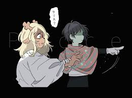

En esta ruta es parecido a la ruta pacifista de Undertale, con la excepción de que aqui no se perdona, se recluta para nuestro reino a los enemigos, con cadad enemigo reclutado se desbloqueara diferentes variaciones, esto es más notorio desde el capitulo 3 donde para salvar a cierto personaje obligatoriamente hay que reclutar a todos los enemigos de ese capitulo, caso contrario morira.
También conocido como Ruta Extraña, a partir del Capitulo 2 desde que Noelle se une a nuestro equipo, tendremos que derrotar a todos los enemigos, en este caso congelarlos, esto hara que Noelle poco a poco se traume y tenga un poco de miedo a Kris, pero al pensar que es un simple sueño le seguira la corriente.
No se dara mucha informacion de esta ruta, solamente mencionaremos que según una gran parte de los jugadores cree que esta ruta es la canonica y el mundo de Deltarune se destruira completamente liberando a los Titantes, aunque por el momento es una teoría.